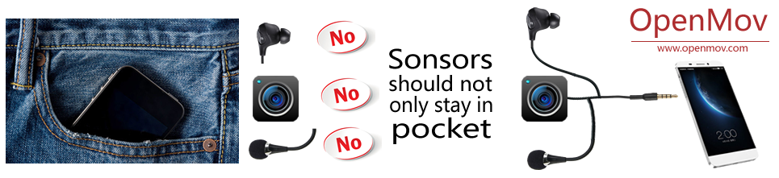
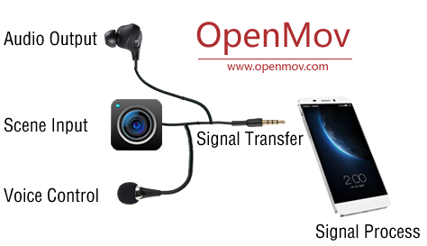
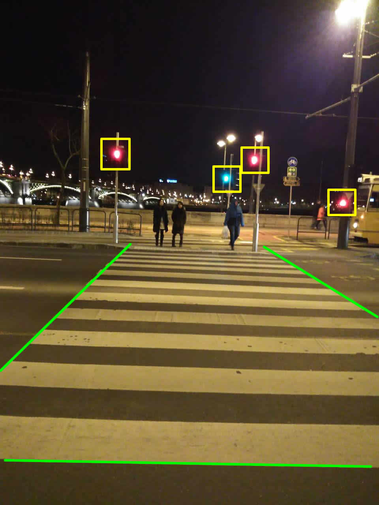
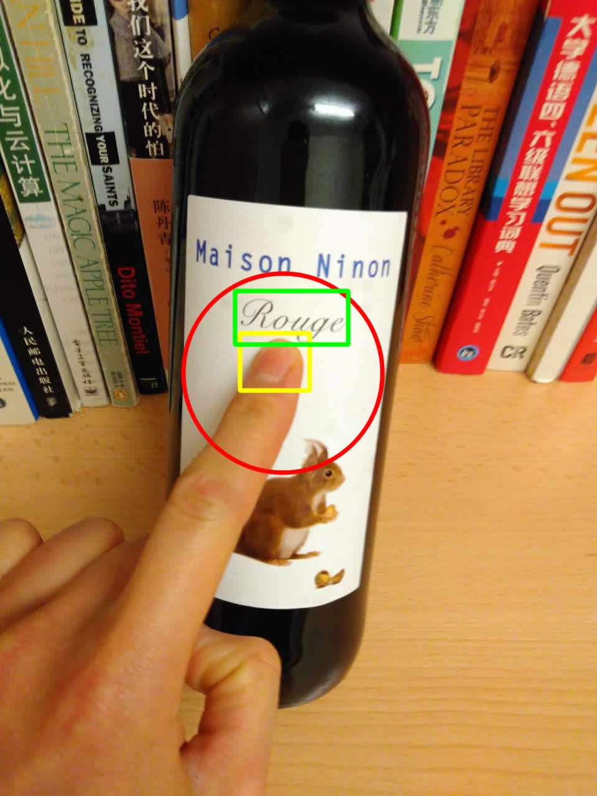
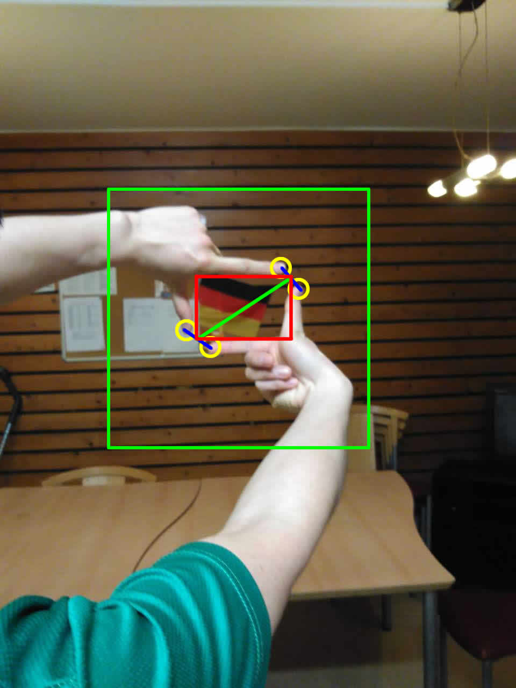

Cong Yang
Research Group for Pattern Recognition, University of Siegen

Figure1：Motivation of OpenMov.
General Idea

Application 1: Blind Sidewalk and Trajectory Recognition

Audio Command --> Blind Sidewalk Recognition --> Trajectory Estimation --> Audio Output
Application 2: Pedestrian Crossing and Traffic Light Recognition

Audio Command --> Pedestrian Crossing Recognition --> Traffic Light Recognition --> Audio Output
Application 3: Help People with Visual Disabilities to Read

Audio Command --> Finger Locolisation --> Text Recognition --> Text Reading --> Audio Output
Application 4: Entertainment

Audio Command --> Hand Gesture Recognition --> Finger Locolisation --> Camera Focus Adjust --> Take Photo
Acknowledgments
Copyright © Cong Yang